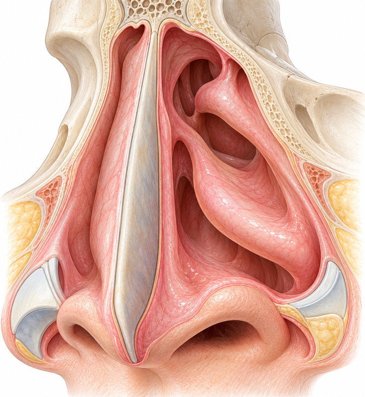
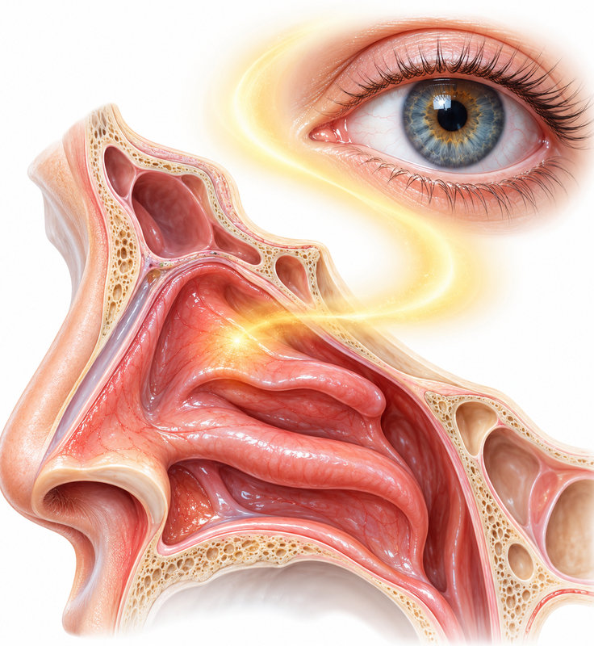

알레르기비염
약물치료의 선택
알레르기비염 약물치료 업데이트: INCS·복합제·불필요한 병용 줄이기

CHAPTER 01 · 코 증상 감별
같은 코 증상에도 출발점은 다르다
염증·구조·자율신경 원인을 함께 분류한다

흡입 알레르겐에 대한 IgE 매개 비점막 염증. 가려움·재채기·맑은 콧물, 결막 증상과 노출의 연관성을 본다.
혈관운동성·식사성 콧물은 콜린성 자율신경 반사가 관여한다. Ipratropium 비강분무제가 소개되었다.
비중격만곡·하비갑개 비대, 충혈완화제 반복 사용으로 인한 약물성 비염을 살핀다. 원인은 서로 섞여 있을 수 있다.
비강·부비동·인두·기관지는 연속된 점막이며, 비염 환자의 천식 동반도 함께 살핀다.
CHAPTER 02 · 비염 분류
빈도·연속 기간·생활 지장으로 분류
간헐성과 지속성의 AND·OR 조건을 보존한다
주 4일 미만 또는 연속 4주 미만. 주당 증상 일수와 연속 기간은 별개의 축이다.
주 4일 이상 그리고 연속 4주 이상, 두 조건을 모두 충족한다. 꽃가루 계절성도 해당 기간에는 지속성일 수 있다.
경증과 중등도–중증은 수면·일상·업무 지장 여부로 구분한다. 증상의 빈도만으로 중증도를 대신하지 않는다.
연속 4주는 누적된 4주가 아니다.
CHAPTER 03 · 검사와 치료 선택
검사는 회피·면역치료 선택에 도움
병력과 임상 증상이 검사 결과 해석의 중심이다
계절성, 집먼지진드기·개·고양이 등 노출과 증상의 연관성을 묻는다.
원인 확인, 치료 반응 부족, 면역치료를 고려할 때 선택한다. 총 IgE 단독의 진단 가치는 낮다.
국소 알레르기비염(LAR)을 생각한다. 비점막에서만 IgE가 생성될 수 있으며, 강의는 검사 음성 비염의 약 20~25%를 설명했다.
전형적 병력에서는 전신 알레르기 검사 음성만으로 AR을 배제하거나 회피 교육을 중단하지 않는다.
CHAPTER 04 · 치료의 토대
치료의 토대 위에 INCS를 놓는다
INCS = 비강분무 스테로이드, INAH = 비강 항히스타민
1
알레르겐 회피·환경 관리, 식염수 세척, 사용법 교육을 함께 시행한다.
2
항히스타민제를 필요 시 사용한다. 지속성에서는 규칙적 조절 치료를 생각한다.
3
INCS를 기본으로 매일 사용한다. 항히스타민제를 매일 먹고 INCS를 심할 때만 쓰는 방식과 구분한다.
4
INAH+INCS 복합분무제로 강화한다. 난치성에서는 제한적 단기 경구 스테로이드·면역치료가 소개되었다.
강의에서 소개한 ARIA 2024–2025는 INAH+INCS 복합제를 INCS 단독보다 우선 제안했다.
CHAPTER 05 · 복합분무제
복합분무제는 성분과 분무감을 구분한다
강의 교재에 소개된 국내 4개 제품
| 리알트리스 | Olopatadine + mometasone / 6세 이상 / 각 비강 2 puff, 1일 2회 |
|---|
| 딜라스틴 | Azelastine + fluticasone / 6세 이상 / 각 비강 1 puff, 1일 2회 |
|---|
| 모테손플러스 | Azelastine + mometasone / 12세 이상 / 각 비강 1 puff, 1일 2회 |
|---|
| 나자플렉스 | Azelastine + mometasone / 12세 이상 / 각 비강 1 puff, 1일 2회 |
|---|
Azelastine 계열의 쓴맛을 불편해하면 상대적으로 덜 쓴 olopatadine 복합제로 바꾸는 선택을 설명했다.
CHAPTER 06 · 비강 치료 점검
경구약을 더하기 전에 비강 치료를 점검
INCS·경구 항히스타민·LTRA의 위치
비강 증상에는 INCS가 경구 항히스타민보다 우월하다고 설명했다. 경구 항히스타민은 LTRA보다 우선하며, 항히스타민+LTRA의 일상적 병용은 추가 이득이 적다고 제시했다.
연자는 심하거나 조절되지 않을 때 항히스타민+LTRA를 병용하기도 한다고 구분해 설명했다. Montelukast의 신경정신계 이상반응 경고도 함께 제시했다.
약을 계속 얹기보다 INCS의 규칙적 사용·분무법·진단을 먼저 재점검한다.
CHAPTER 07 · 눈 증상
눈 가려움도 코 염증과 함께 치료
Naso-ocular reflex를 안구 증상과 연결한다

비점막 염증은 신경 반사로 눈 가려움을 유발할 수 있다. 꽃가루가 눈에 직접 닿는 설명만으로 한정하지 않는다.
INCS로 코 염증을 조절하고 경구 2세대 항히스타민을 사용하며, 눈 증상이 남으면 항히스타민 점안제를 더하는 접근을 설명했다.
무보존제 인공눈물·냉찜질, 눈 비비지 않기, 1회용 안약 사용을 소개했다.
안구 증상이 있다고 코의 조절 치료를 빼지 않는다.
CHAPTER 08 · 첨가물
자극 호소 시 첨가물도 선택 기준
BKC(benzalkonium chloride) 방부제에 대한 반응
분무 후 작열감·재채기 악화는 약 자체의 효과 부족과 구분한다. 강의는 BKC의 점막 자극·접촉 알레르기를 강조했다.
교재에서 국내 BKC 무함유 선택지로 옴나리스(ciclesonide)를 제시했다.
Phenylethanol·산성·고장성도 자극과 관련될 수 있다. 교재 표에서 phenylethanol은 딜라스틴에 있고 리알트리스에는 없다.
딜라스틴의 향·쓴맛 등 개인의 불편을 듣고 제형을 바꾸는 접근이다. 제품 간 임상 효과 차이만으로 선택하지 않는다.
방부제에 민감한 환자에서는 성분명뿐 아니라 제형과 첨가물을 같이 본다.
CHAPTER 09 · 분무 방향
코피 예방은 분무 방향을 바꾼다
비중격을 피하고 같은 쪽 귀 방향으로 분무한다
오른쪽 코는 왼손, 왼쪽 코는 오른손. 노즐을 비중격이 아닌 같은 쪽 귀·외측벽 방향으로 향한다.
교재는 깊이 1 cm, 머리를 45° 앞으로 제시했다. 분무 전 식염수 세척, 분무 후 코 풀지 않기를 설명했다.
1~2주 적응을 보되 자극이 지속하면 BKC 무함유 제제로 바꾸는 단계를 제시했다.
코피의 흔한 원인은 비중격을 직접 향한 분무이므로 실제 사용하는 모습을 확인한다.
CHAPTER 10 · 비강 세척
세척은 규칙적으로, 과도한 빈도는 피한다
점액·알레르겐 제거와 INCS 흡수 보조
강의의 기본은 하루 1~2회. 더 자주 하는 것이 추가 이득을 보장하지 않으며 과도한 세척은 자극·건조를 유발할 수 있다.
등장성 식염수를 기본으로 하며, >3% 고장성은 자극 때문에 비권장이라고 설명했다. 수돗물을 직접 사용하지 않는다.
끓여 식힌 물·멸균수 등 준비된 물을 사용한다. 세척 중 침을 삼키지 않고 아~·크~ 발성으로 이관으로의 유입을 줄이는 방법을 설명했다.
하루 한 번도 의미가 있으며, 여러 번 하다 중단하기보다 꾸준한 1회를 제안했다. 0.9% 용액과 세척 뒤 10~20분 후 분무를 답변했다.
세척 후 잔류액으로 얼굴 통증이 생기면 머리를 앞뒤로 기울여 배출하는 방법이 소개되었다.
CHAPTER 11 · 충혈완화제
충혈완화제는 투여 경로별로 구분
비강 반동성 코막힘과 경구 전신 부작용
5일 초과 사용을 피한다. 장기 사용은 약물성 비염을 유발한다. 중단 후 대개 2~3일부터 호전하고 약 1주면 대부분 호전한다고 강의에서 설명했다.
Pseudoephedrine은 비강제와 달리 반동성 코막힘은 없지만 혈압·맥박 상승·불면·배뇨곤란이 문제다. 고령자·심혈관질환자에서 주의하고 일시적 보조로 사용한다고 답했다.
경구 triprolidine 복합제의 졸림·항콜린 부작용을 고령자·운전·전립선비대 상황에서 구분한다 — 연자 Q&A.
CHAPTER 12 · 연자 Q&A
연자 Q&A: 충분히 매일 쓰고 판단한다
효과 발현과 유지·감량에 대한 연자의 설명
1
코막힘이 주증상이면 INCS를 바로 시작한다고 답변했다. 편측 코막힘·혈성 콧물·후각 소실은 구조·폴립 등 평가로 연결한다.
2
효과는 며칠 내 느낄 수 있지만 충분한 효과는 1~2주 후이므로 최소 2주 매일 사용 후 판단한다고 답했다.
3
본인은 비용·하루 2회 부담 때문에 단독 2주 후 부족하면 복합제로 올리고, 처음부터 심한 경우를 예외로 한다고 밝혔다.
4
2~3개월 안정되면 최저 용량으로 감량, 꽃가루 계절 2주 전 시작, 통년 노출은 저용량 유지라는 방식을 답했다.
복합제를 장기 사용 중이면 INCS 단독으로 내려 조절되는지 보는 접근도 연자 Q&A에 제시되었다.
CHAPTER 13 · 연자 Q&A
연자 Q&A: 성장·안과·상호작용
장기 사용 상담에서 환자별 위험을 구분한다
Mometasone은 1년 연구에서 위약과 차이가 없고 ciclesonide는 억제 보고가 없다고 답했다. Fluticasone furoate는 약 0.27 cm/년 차이, 구세대 beclomethasone은 약 0.9 cm/년 차이를 설명했다.
소아는 최저 유효 용량을 사용하고 6~12개월마다 키를 재어 성장곡선에 기록하는 방식을 답했다.
모든 사용자에게 일률적 정기 검진을 권하지는 않되, 녹내장·가족력·고도근시·당뇨·다른 스테로이드 병용·고용량 장기 사용 등에서는 초기와 연 1회 안압 평가를 제안했다.
Ritonavir·cobicistat·itraconazole 같은 강한 CYP3A4 억제제와 fluticasone·budesonide 병용 시 쿠싱 증후군 보고를 언급하고 성분·용량 조정을 답했다.
이 슬라이드는 강의 후 Q&A 답변이며, 연자가 제시한 사용·추적 방식을 담았다.
CHAPTER 14 · 연자 Q&A
연자 Q&A: 항히스타민 병용을 줄인다
비염의 조절 부족을 만성 두드러기의 증량법으로 다루지 않는다
비염에서 경구 항히스타민 증량·두 종류 병용을 권하지 않는다고 답했다. 만성 두드러기의 4배 증량과 구분했다.
INCS를 더하거나 INCS로 바꾸고, 그래도 부족하면 복합분무제로 올리는 순서를 제시했다.
항히스타민+LTRA의 추가 이득은 적다고 답했다. Montelukast는 비염 단독이면 다른 약을 우선하며 천식 동반 시 선택할 수 있다고 설명했다.
청소년의 기분·수면 변화 등을 보호자에게 설명하고 효과·부작용을 재평가한다는 연자 답변이 이어진다.
CHAPTER 15 · 연자 Q&A
연자 Q&A: 양성 검사는 감작을 뜻한다
총 IgE와 특이 IgE를 임상 알레르기와 구분한다
개·고양이 접촉 후 재채기·눈 가려움·쌕쌕거림이 있으면 임상적으로 의미 있는 알레르기로 보고 노출 감소와 비염 치료를 연결한다.
특이 IgE 양성만으로 알레르기 질환을 진단하지 않는다. 증상 없는 감작으로 구분한다.
총 IgE 정상도 특정 항원 감작을 배제하지 않는다. 낮은 등급 MAST 양성·교차반응 등을 고려하고 필요 시 SPT·ImmunoCAP·성분검사 평가를 의뢰한다고 답했다.
검사 결과보다 실제 노출과 증상의 시간 관계를 앞세운다 — 연자 Q&A.
CHAPTER 16 · AR·CRS
AR과 CRS가 겹칠 때 진료를 다시 정리
항생제·수술의 자리를 염증 조절 치료와 구분한다
CRS는 ≥12주, 주증상 ≥2개와 내시경 또는 CT 객관 소견을 함께 평가한다. 후각 소실·폴립은 별도 평가 단서다.
CRS에서도 INCS+식염수 세척이 주축이다. 알레르기가 없는 급성 부비동염에 항히스타민을 일률적으로 얹지 않는 설명과 연결된다.
누런 콧물의 색만으로 세균을 판단하지 않는다. 10일 무호전·이중악화·중증 패턴을 평가한다.
편측·혈성 분비물, 안와·신경 증상은 신속 평가. 충분한 치료에도 구조적 폐쇄·폴립이 남으면 의뢰한다. 수술 후에도 염증 조절은 이어진다.
AR은 INCS 중심으로 조절하고, 만성 코막힘의 다른 원인과 합병증을 함께 분류한다.
CHAPTER 17 · 면역치료
면역치료는 원인이 분명할 때 연결
약물·회피로 부족한 IgE 확인 AR의 선택
임상 증상과 맞는 IgE 매개 원인이 분명한지 평가한다.
약물·회피로 조절이 부족하고 3~5년 지속할 수 있는 상황을 강의에서 제시했다.
피하 또는 설하 경로를 순응도·안전성에 맞춰 선택한다. SCIT는 아나필락시스에 대비한 환경이 필요하다.
강의는 면역치료를 질환 변형·천식 발생 및 신규 감작 예방과 연결해 설명했다.
CHAPTER 18 · 핵심 복습
강의의 핵심을 진료의 연결점으로
알레르기비염 약물치료 업데이트: INCS·복합제·불필요한 병용 줄이기
임상 증상과 맞는 IgE 매개 원인이 분명한지 평가한다.
약물·회피로 조절이 부족하고 3~5년 지속할 수 있는 상황을 강의에서 제시했다.
강의는 면역치료를 질환 변형·천식 발생 및 신규 감작 예방과 연결해 설명했다.